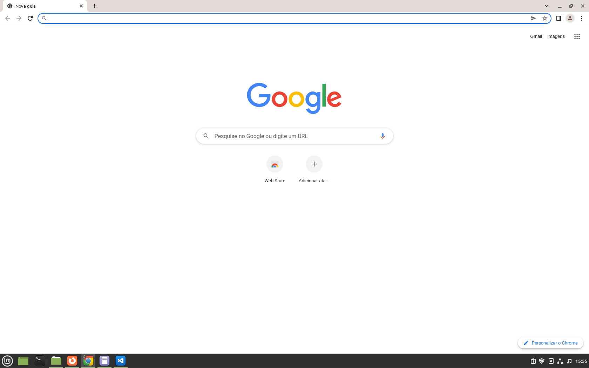

Conhecendo o Sistema Operacional Linux
Navegadores (ou web browsers) — sem dúvidas, um dos tipos de software mais utilizados por todos que exploram a internet. Lembrando que o MS Edge, embora não possa ser instalado no Linux, pode ser usado em uma máquina virtual para casos de emergência.
- Mozilla Firefox Lançado pela Mozilla em 2002, o navegador Firefox não demorou muito para conquistar o seu espaço e se tornar um dos preferidos por internautas de todos os níveis — muito disso se deve ao vasto número de extensões (add-ons) disponíveis para incrementar as suas funcionalidades. Apesar de ser muito utilizado em ambiente Windows, o Firefox pode ser considerado um genuíno software para Linux, visto que, desde o início, ele foi desenvolvido em código aberto (open-source) e já vem instalado como padrão nas distros do Tux (o famoso mascote pinguim). Google Chrome É praticamente impossível imaginar que a gigante Google ficaria de fora dessa disputa pelo domínio entre os navegadores, não é mesmo?
- Chrome Seu web browser oficial, chegou ao mercado em 2008 e logo passou a fazer frente aos já consolidados Firefox, Explorer, Safari e Opera. De acordo com o site StatCounter, o Chrome é o favorito de 51,76% (registrados no início de 2017). Um dos fatores que contribuem para isso é que trata-se de um navegador multiplataforma e funciona em praticamente qualquer sistema operacional (inclusive o Linux).
- 
- Opera O navegador Opera, desenvolvido pela empresa de mesmo nome, é um dos browsers mais antigos ainda disponíveis no acirrado mercado — foi lançado no ano de 1995. Após ficar estagnado por um bom tempo, perdendo espaço para todos os outros navegadores que chegaram ao longo dos anos, o programa passou por grandes mudanças e voltou a ser lembrado por boa parte dos usuários, a ponto de estar entre os 5 mais utilizados. Há muito tempo, este software é distribuído para os sistemas Linux (sinal de que já está bem adaptado) e pode ser considerado uma das melhores alternativas.